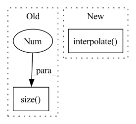

Pattern ID :34855

Before Change
mask = Masks.get_ff_mask(height, width)
mask_all.append(mask)
mask = torch.from_numpy(np.asarray(mask_all)).unsqueeze(1).float()
ones = torch.ones(x.size(0), 1, x.size(2), x.size(3))
mask = ones * mask
if x.is_cuda:
mask = mask.cuda()
After Change
// TODO: Matching the mosaic patch size and the mask size
mosaic_unit_size = config["mosaic_unit_size"]
downsampled_image = F.interpolate(x, scale_factor=1. / mosaic_unit_size, mode="nearest")
upsampled_image = F.interpolate(downsampled_image, size=(height, width), mode="nearest")
result = upsampled_image * mask + x * (1. - mask)
else:
raise NotImplementedError("Not implemented mask type.")
In pattern: SUPERPATTERN
Frequency: 3
Non-data size: 2
Instances
Fragment ID: 99909172
Project Name: sayednadim/global-and-local-attention-based-free-form-image-inpainting
Commit Name: aaa17ed332dc95db0f5900a43be179e26569b50c
Time: 2020-08-16
Author: smnadimuddin@gmail.com
File Name: model/mask.py
M Class Name: AnonimousClass
N Class Name: AnonimousClass
M Method Name: mask_image(2)
N Method Name: mask_image(2)
M Parent Class:
N Parent Class:
M File Name: model/mask.py
N File Name: model/mask.py
M Start Line: 40
M End Line: 49
N Start Line: 56
N End Line: 72
'>
Before Change
// Return copy if upsampling factor is one.
if self.upsampling_filter.size(0) == 1:
return x
d = x.dim()
After Change
x = x.transpose(1, 2)
x = self.pad(x)
x = F.interpolate(
x,
(x.size(-1) - 1) * self.scale_factor + 1,
mode="linear",
align_corners=True,
)[..., :-1]
y = x.transpose(1, 2).reshape(B, -1, D)
if d == 1:
'>
Fragment ID: 99909156
Project Name: sp-nitech/diffsptk
Commit Name: e6c55923477c74a650f2ccefe1a7287628539779
Time: 2023-05-23
Author: chin-yun.yu@qmul.ac.uk
File Name: diffsptk/core/linear_intpl.py
M Class Name: LinearInterpolation
N Class Name: LinearInterpolation
M Method Name: forward(2)
N Method Name: forward(2)
M Parent Class: nn.Module
N Parent Class: nn.Module
M File Name: diffsptk/core/linear_intpl.py
N File Name: diffsptk/core/linear_intpl.py
M Start Line: 78
M End Line: 93
N Start Line: 70
N End Line: 89
'>
Before Change
def mask_image(x, config):
height, width, _ = config["image_shape"]
mask = torch.ones(x.size(0), 1, x.size(2), x.size(3))
temp = torch.ones(x.size(0), 1, x.size(2), x.size(3))
for i in range(x.size(0)):
mask_temp = Masks.get_ff_mask(height, width)
After Change
// TODO: Matching the mosaic patch size and the mask size
mosaic_unit_size = config["mosaic_unit_size"]
downsampled_image = F.interpolate(x, scale_factor=1. / mosaic_unit_size, mode="nearest")
upsampled_image = F.interpolate(downsampled_image, size=(height, width), mode="nearest")
result = upsampled_image * mask + x * (1. - mask)
else:
raise NotImplementedError("Not implemented mask type.")
'>
Fragment ID: 99909173
Project Name: sayednadim/global-and-local-attention-based-free-form-image-inpainting
Commit Name: 2e453ae0b658395a88acb8db67115db86d9274ea
Time: 2020-08-16
Author: smnadimuddin@gmail.com
File Name: model/mask.py
M Class Name: AnonimousClass
N Class Name: AnonimousClass
M Method Name: mask_image(2)
N Method Name: mask_image(2)
M Parent Class:
N Parent Class:
M File Name: model/mask.py
N File Name: model/mask.py
M Start Line: 40
M End Line: 48
N Start Line: 56
N End Line: 72